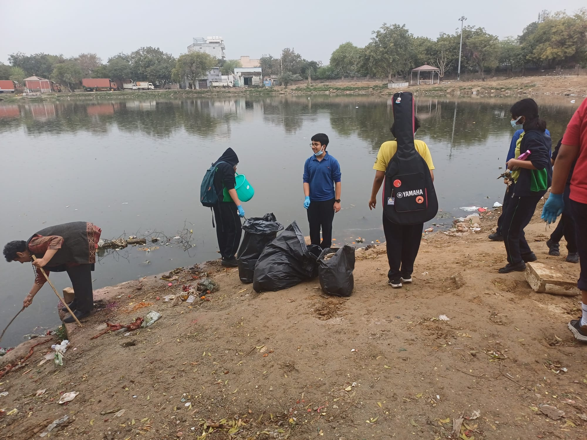
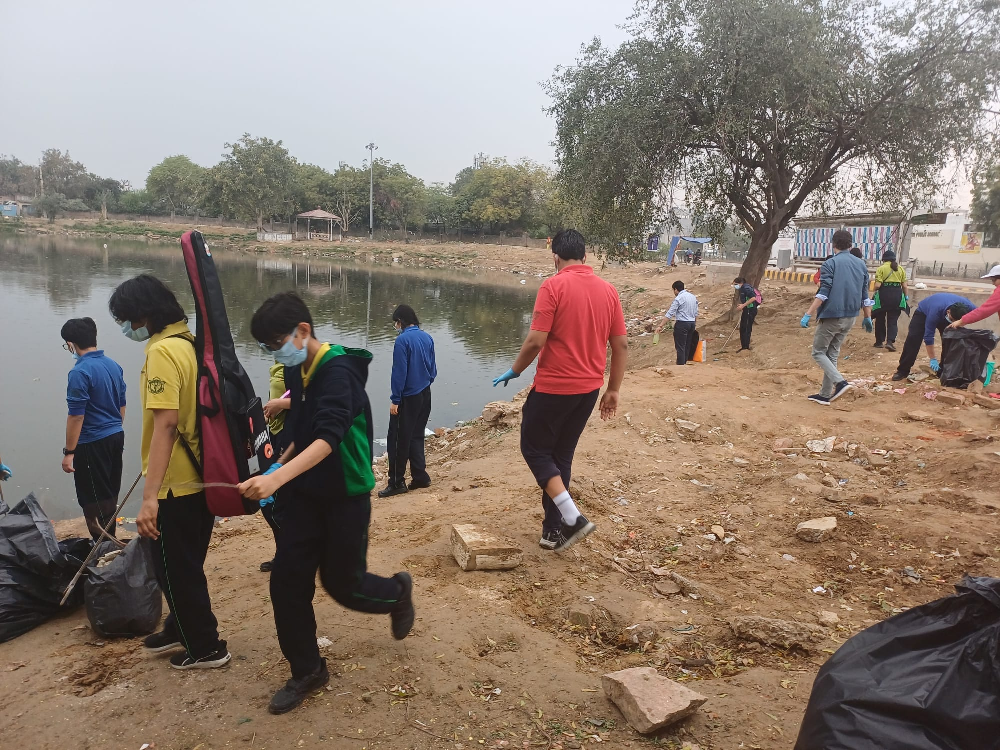
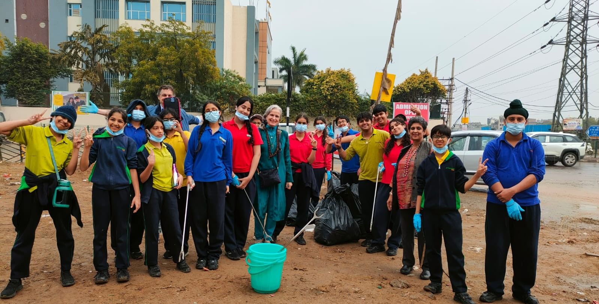

Every Drop Matters
Water
Ambassadors
Conserve · Educate · Act
A student-led movement uniting schools to protect our planet's most precious resource — one drop at a time.
Partners & Contributors
Those Who Believe
Our Initiative
Riding the Wave of Change
Water Ambassadors is a student-led conservation initiative born from a deep concern for one of Earth's most irreplaceable resources. Across our region's schools, students are stepping up as guardians of water — learning, educating peers, and driving real change in their communities.
The program focuses on three pillars: Awareness — understanding the scale of water wastage; Action — organising drives, audits, and campaigns; and Advocacy — pushing for systemic change at school and community level.
Together with the Living Peace Projects Foundation, we believe that every student can be an agent of conservation. The ripples we create today will become the waves of change tomorrow.
Learn More →Ms. Brigitte Madeleine van Baren
Chairman, Living Peace Projects Foundation
Ms. van Baren's visionary leadership brought the Water Ambassadors programme to our school, igniting a spark of environmental consciousness in students. Her tireless advocacy through the Living Peace Projects Foundation continues to inspire young minds to take ownership of our planet's future.
Cleanliness Drive
Action in Motion
Photographs from our cleanliness and water conservation drives across the school campus.




Awareness Posters
Our Media
A visual campaign crafted by our students to spread the message of water conservation.
Our Anthem
Waves of Change
A song created by our students — a melody for the movement.

Waves of Change
Water Ambassadors
Join the Wave
Whether you're a school, an organisation, or an inspired individual — there's a place for you in this movement. Every voice amplifies the ripple.
Get in Touch →